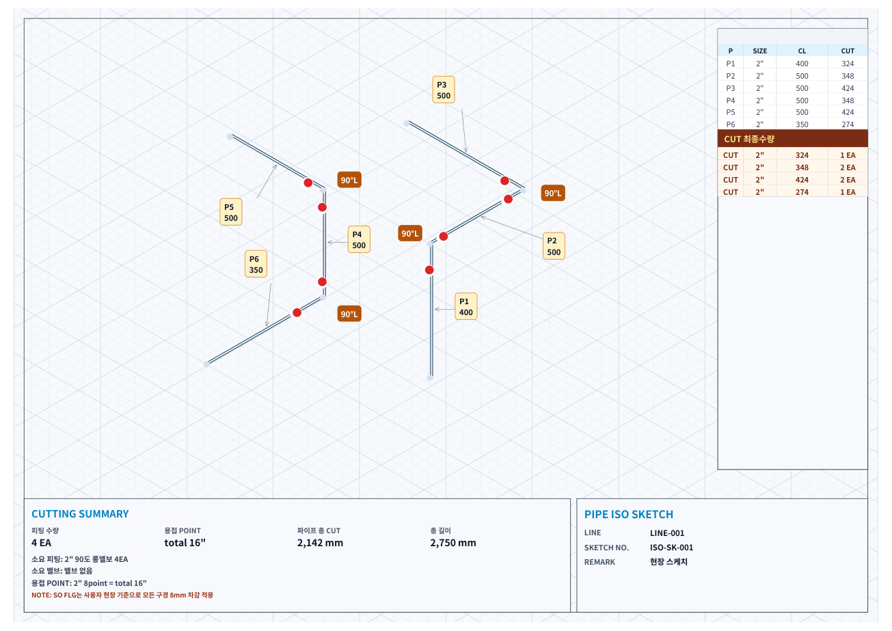

배관 계산 · 현장 배관 ISO 계산기 사용법
배관 절단 길이 계산하는 법
배관 센터 치수를 알고 있어도 실제로 자를 파이프 길이는 피팅과 접합 조건에 따라 달라집니다. 현장 배관 ISO 계산기에서 CL을 입력하고 CUT를 확인하는 방법을 정리했습니다.
코리아피터 · 2026년 11월 11일 작성
센터 치수 CL과 절단 길이 CUT의 차이
CL은 도면에 입력하는 센터 기준 치수이고, CUT는 해당 구간의 피팅 공제와 여유값 등을 반영한 파이프 절단 길이입니다. 같은 CL이라도 양 끝이 직관인지, 엘보나 티가 있는지에 따라 CUT가 달라집니다.
앱에서 그린 선의 화면 길이는 실제 CL과 별개입니다. 스케치 모양을 만든 뒤 각 구간에 실제 치수를 입력하세요.
피팅 공제와 여유값을 반영하는 계산 예시
단순한 구간의 관계는 CUT = CL − 시작 피팅 공제 − 끝 피팅 공제 + 여유값으로 이해할 수 있습니다. 소켓·나사 접합이나 특수 피팅은 앱에서 선택한 접합 규칙과 해당 피팅 설정을 함께 확인합니다.
| 항목 | 값 |
|---|---|
| CL | 1,000 mm |
| 시작 공제 | 100 mm |
| 끝 공제 | 100 mm |
| 여유값 | 0 mm |
| CUT | 1,000 − 100 − 100 = 800 mm |
100 mm는 설명을 위한 임의의 공제값입니다. 실제 엘보·티·플랜지의 공제값으로 그대로 사용하지 마세요.
앱에서 배관 커팅 리스트를 확인하는 순서
- 배관 사이즈와 mm·inch 단위를 맞추고 접합 방식을 확인합니다.
- 배관 경로를 그린 뒤 치수 도구로 각 선의 실제 CL을 입력합니다.
- 피팅 도구에서 연결점·선을 선택해 실제 사용할 피팅을 적용합니다.
- 상단 절단 결과에서 구간별 SIZE·CL·CUT와 미입력 치수를 확인합니다.
- 피팅이나 치수가 바뀌면 해당 위치를 수정한 뒤 절단 결과를 다시 검토합니다.
스케치 작성부터 시작하려면 배관 ISO 그리는 법을 참고하세요.
레듀샤나 티가 있을 때 확인할 점
레듀샤는 큰 쪽과 작은 쪽 배관 사이즈를, 이경 티는 주관과 분기관을 구분해야 합니다. 피팅을 선 중간에 넣었는지 끝단에 넣었는지도 공제 처리에 영향을 줄 수 있습니다. 단순히 피팅 전체 길이를 모든 인접 구간에서 반복해서 빼지 않도록 구간별 결과를 확인합니다.
플랜지나 밸브도 종류별 길이 기준이 다를 수 있습니다. 앱에서 적용한 공제값과 실제 자재 카탈로그·현장 도면을 대조한 다음 제작에 사용합니다.
CL을 넣었는데도 CUT가 예상과 다르다면
- 선택한 배관 규격과 양 끝 피팅이 맞는지 확인합니다.
- 센터 치수 대신 면간 치수를 넣지 않았는지 확인합니다.
- 여유값·수동 공제값과 접합 방식이 의도한 설정인지 확인합니다.
- 옵셋의 대각선 센터 길이를 실제 절단 길이로 사용하지 않았는지 확인합니다.
옵셋 구간은 45도·롤링 옵셋 계산에서 TRAVEL CL과 CUT의 관계를 함께 살펴보세요.
